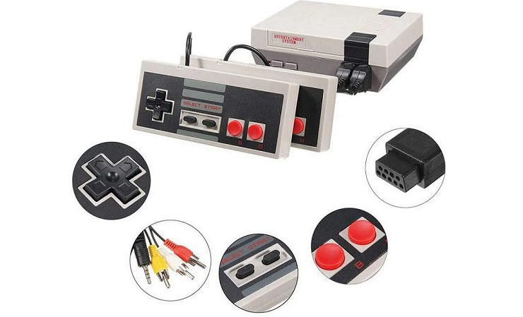
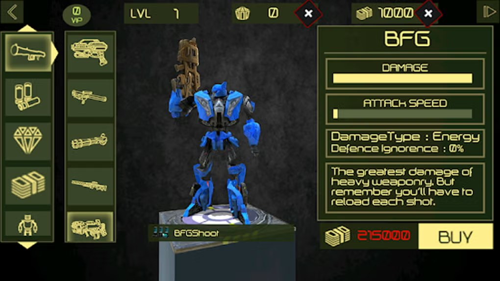

The book Design Patterns: Elements of Reusable Object-Oriented Software, also known as the "blue book" after the color of the first edition's cover, or the "gang of four / GoF" book, was published almost thirty years ago.
For an industry like game development, if you look at games as software, that's the Middle Ages. The correctness of the solutions formulated in this book is shown by the fact that it's still recommended reading, and people build new systems and frameworks on those recommendations — although the frameworks themselves aren't exactly known for their longevity.
I still think the book is relevant — as basic knowledge like math, algorithms and synchronization primitives — but over the years people have created and discovered many new ones, even if less well-known. And some patterns have become so overused that they've turned into anti-patterns instead, like Singleton, whose point of use has been completely lost. And where reasonable application does no more harm but lets you untangle dependencies, building an architecture on such principles leads only to code bloat and code for code's sake.
Other patterns, for example Command/Flyweight, were forgotten and are little used in general software development, but firmly established themselves in game development and interactive systems. Those are exactly the things I wanted to talk about in this article, and show a few specific patterns used in gamedev that you're unlikely to hear about outside of it, or that you'll be scolded for using.
Come on in, there are enough reinvented wheels and rakes for everyone.
This is part of the "Game++" series:
Game++. Patching patterns <=== You are here
PATTERNS
Before you can change game code — add a new mechanic, fix a bug, improve performance or just do the thing you opened the editor for in the first place — you first need to understand what the existing system does. If you think loading data from disk into RAM is too slow, try to estimate how long it took to load the individual words of this paragraph into your brain.
You don't have to understand the whole game inside and out, but you'll have to "load" all the key pieces of logic into your brain: which objects are involved, how the game loop is built, where events are handled, and how data moves between systems. If it's NPC behavior code, then you need to understand how the AI is built: BT, FSM or custom logic. How navigation works, where state switching happens, and so on.
If you're fixing a bug in the combat system — how is it connected to animation, physics, sound? How are hit events passed? All of this needs to be loaded into RAM… only this memory of ours is biological, and the bus is narrow — a couple of optic nerves and a bunch of intermediate large and small caches.
Essentially, this whole process, when you read code with your eyes, interpret its syntax, build a model of what's happening in your head — it's not reading code — it's a picture you decode line by line, linking symbols and names to concepts. And if it's slow for a computer to read data from disk, then it's slow for the brain to read code from the screen. Especially if it's tangled, unstructured or too clever.
And at this stage nothing has been written yet. You're just gathering the context of the problem. Loading into your "brain cache" information about which components and systems are involved, where the boundaries of responsibility are, which dependencies are critical, and, most importantly, where it's safe to !not touch! the code.
Once this context is loaded, everything goes more smoothly. The solution may require thinking and trying options, testing or debugging, but the change itself often turns out to be simple. Add a couple of lines, move a call, change a condition. Sometimes the "programming" itself is the last and least costly part of the work, crowning two days of "visual debugging." All the rest of the time you spent not on writing, but on understanding.
And this is where good architecture starts to work. Well-organized code reads faster, requires less cognitive load. A system where the components are separated and the connections between them are explicit does its job, like in a room where the light switch is at the level of a raised hand to the left of the entrance. But if it's hidden behind a wardrobe, even a simple bug turns into a detective story.
So architecture isn't about abstractions for the sake of abstractions. It's about how quickly and painlessly you can get into the cause of a bug, fix it, and not attract the attention of the men in white coats.
Blue book
In the air still thick with the smell of pixel gore, after the release of the first DOOM (1993), in 1994 the industry was busy chasing the goal of repeating the "3D at insane speed" effect. Everyone wanted to make their own "DOOM clone," and that spawned a huge burst of creativity and experimentation with BSP, lighting and level triggers.
Game development was only just plunging into the era of object-oriented programming, while four "grizzled old men" of computer science (Erich Gamma, Richard Helm, Ralph Johnson and John Vlissides) created the monumental work titled "Design Patterns: Elements of Reusable Object-Oriented Software." Well, no — they're grizzled old men now, but back then they were between 30 and 38, so the "Gang of Four" wrote Design Patterns at different ages, but all were already active researchers and engineers.
The book's title, majestic and unliftable, was quickly shortened to the catchier and more memorable "book by the gang of four." And time, the merciless editor of everything around, shortened it even more — to "GoF book" or "the blue book." The only thing that didn't get shortened was the book's main question — "How to make the complex simple?"
How to make the complex simple?
If you look at your code, you'll see a lot of repetition there, which gets extracted into functions, modules, classes. The need for patterns (not only design patterns) arises as a compensation mechanism in situations where the chosen development environment (language, engine, framework, environment, etc.) doesn't handle the level of abstraction the project requires, or isn't expressive enough. You can even invent your own specific pattern named after Stanislav Petrovich Plusoviy, important and suitable for your specific project, game or engine. In such cases patterns effectively act as crutches, artificially extending the capabilities of the development system.
A telling example is the Strategy pattern, which in most modern programming languages can be implemented via lambdas, functors or delegates. For example, in C++11 a strategy can be passed simply as a function, whereas before you had to build a class hierarchy. Something like this, an off-the-top-of-my-head example:
void executeStrategy(const std::function<void()>& strategy) {
strategy();
}
void Unit::update() {
...
auto aggressive = [&]() { std::cout << "Attack!\n"; };
auto defensive = [&]() { std::cout << "Defend!\n"; };
executeStrategy(aggressive);
executeStrategy(defensive);
}And this is already code from a real game (legacy), handing out strategies to units, as it was before the changes:
void ExecuteAgressive(
uint32_t nUnit,
uint32_t nEvictables,
std::vector<EnemyEntry>* entries,
AI_LAYER layer,
std::vector<FriendEntry>* pages,
std::vector<uint16_t>* results)
{
PROFILE_ONLY(ZoneScoped);
....
}
int Unit::update() {
...
_strategyMgr.execute<void(
uint32_t,
uint32_t,
std::vector<EnemyEntry>*,
AI_LAYER,
std::vector<FriendEntry>*,
std::vector<uint16_t>*)> // Should look at cleaner ways to deduce these
(
STRATEGY_TYPES::STRATEGY_AGRESSIVE,
mThreadIDs[i],
{mClearStates},
ExecuteAgressive,
i,
mMinNumEvictables,
&mEnemiesToAttack,
mAiLayer,
&mResult
);
...
}The marker syndrome
Another problem with patterns is people's desire to apply the approaches they see in more experienced colleagues — literally, as a strict template that must be reproduced exactly. This is especially noticeable in those who are just beginning to try on design patterns, or right after reading books — the right books, by the way — but who apply them verbatim, without adapting them to the specific needs of the project.
The desire to do it right ends up leading to a more complex architecture, an increase in the number of layers and abstractions. And any additional load leads to lower performance, and as a rule to maintainability of the code. The zero-cost rule stops working because we ourselves dragged unnecessary functionality into the project, even if it's correct.
"If you have a marker in your hand, you can color everything around you except that marker. If you have two markers, you can color literally everything." This expression perfectly shows a developer's train of thought after getting acquainted with design patterns. Patterns are seen everywhere, and hands reach to cram everything the eye falls on into a pattern.
The enthusiasm is commendable, but it often leads to the opposite effect — overly complex solutions, abstractions and layers of dependencies where simple straightforward code is enough. I may seem trite, but introducing a factory pattern to create something with fewer than a few dozen object types creates more problems than it solves. Patterns are good, pattern poisoning is much worse, and the result is a paradoxical situation: tools meant to improve the code make it inefficient, tangled, multi-layered, multi-file, multi-component.
Levels of patterns
Design patterns differ by level of complexity, scope of system coverage and degree of detail. If we look within the scope of games, you can implement user input handling with a direct keypress handler — that's a local solution, simple and reliable, a three-wheeled bicycle that can be fixed with a hammer, a junior and some swearing.
Or you can make a dispatch system, with storage and prioritization, in a separate thread — that's already an architectural approach, like a personal car, but it needs gas, a driver and a mechanic to service it, and with a hammer here you can only thoroughly break everything.
Idioms are the simplest and lowest-level patterns. They're typical techniques applicable within a single specific project, framework or programming language. For example, the "double-checked initialization" in C++ or the use of RAII. Idioms depend on the syntax and features of the platform, so they aren't universal. Below is the code for the double-checked singleton initialization idiom.
class Singleton {
public:
static Singleton* getInstance() {
if (_instance == nullptr) { // First check (no lock)
lock_guard<mutex> lock(_mutex);
if (_instance == nullptr) { // Second check (after lock)
_instance = new Singleton();
}
}
return _instance;
}
void sayHello() const {
cout << "Hello from Singleton\n";
}
private:
Singleton() {}
static Singleton* _instance;
static mutex _mutex;
};Architectural patterns, on the contrary, have maximum universality. They describe the high-level structure of the entire system and can be implemented in practically any language. Examples of such patterns are MVC, layered architecture, microservices, loose coupling or the mailbox. Such solutions define the fundamental principles of code organization and interaction between its parts.
And between these two extremes are the classic design patterns described in the "gang of four" book. But the article isn't about that; if you want to read more on this topic, I can recommend this wonderful site (refactoring.guru) and of course the books.
"Head First Design Patterns" (Eric Freeman, Elisabeth Robson)
"Patterns of Enterprise Application Architecture" (Martin Fowler)
"Domain-Driven Design" (Eric Evans)
"Implementation Patterns" (Kent Beck)
"Refactoring to Patterns" (Joshua Kerievsky)
"Pattern-Oriented Software Architecture" (the Buschmann, Meunier book series)
"Enterprise Integration Patterns" (Gregor Hohpe, Bobby Woolf)
"Clean Architecture" (Robert C. Martin)
"Implementing Domain-Driven Design" (Vaughn Vernon)
Next I'll describe the most frequently used patterns in games.
COMMAND
Turns code into Lego — just don't step on it barefoot
Probably the pattern most beloved by game developers. It finds use in every project, be it an indie game or yet another world from Ubisoft. In the lucky cases it turns chaotic code into a structured system; in the unlucky ones it breaks the game's monolith into a bunch of little monoliths from which nothing decent can be assembled anymore.
The authors of the blue book describe it as "an object that encapsulates a request," which lets clients "be parameterized" with different operations, queue them, or cancel them. At first this description sounds too abstract and confusing. In reality, "client" means a part of the game logic, not a person, and "parameterization" here gives you the ability to substitute one action for another, like parts in a Lego set.
The main idea of Command is to turn an action into an object. Imagine a button in the game's UI — without this pattern the button will call code directly, for example player.jump(). And at the start of a project that's usually how it is.
But if you use Command, the button is given an object like button.onclick(CommandJump). The button itself doesn't know what the command does — it just runs its method button.execute(CommandJump). So we untangled three things: the source of the signal (now you don't need to know that the player can jump), the consumer of the signal (maybe we want to write tests and don't need a controller for that), and the logic of the signal (now you can make several kinds of jump).
As soon as we've split our logic into parts, it opens up many opportunities to shoot yourself in the foot. One button can perform different actions depending on the command passed — jump, attack or open the menu. Commands are now easy to extend: to add undo, it's enough to save the state before the change. You can make deferred execution, you can queue them and process them with priorities.
In games this pattern is especially handy for managing complex logic. Take the strategy genre — the player's actions usually come down to building and moving units. Command lets you easily replay moves, synchronize actions between players in multiplayer, or test scenarios by recording and replaying sequences of commands. For strategies the "command" becomes the core pattern of the gameplay mechanics — you could say that without the "command" you can't make a strategy-genre game.
It's a way to abstract an action by turning it into an independent set of logic. Such sets can be combined, rolled back, passed between components of the system. This not only simplifies the code, but also gives freedom to implement complex features — from a simple undo to synchronization in distributed systems.
More examples here
struct Command {
virtual ~Command() = default;
virtual void execute() = 0;
virtual void undo() = 0;
};
class PlayerJump : public Command {
public:
explicit PlayerJump(Player& player) : player_(player) {}
void execute() override {
player_.jump();
}
void undo() override {
std::cout << "Can't undo a jump\n";
}
private:
Player& player_;
};
class CommandManager {
public:
void executeCommand(Command command) {
command.execute();
history_.push(std::move(command));
}
void undoLastCommand() {
if(history_.empty()) return;
history_.top()->undo();
history_.pop();
}
private:
std::stack<Command> history_;
};But this pattern really shines best when AI appears in the game. Townsfolk, barbarians, some monsters or sheep on the meadow. If you focus on controlling the player character, the pattern is overkill there. But for NPCs in the game world all the behavior logic is built around commands, if you want something smarter than a nightstand following the player.
Here commands are used as an interface between the AI system and the units, so you can separate the AI from direct control of objects. The AI will generate commands based on what the unit is doing and where the player is. For example, the game logic can create an AttackCommand or RetreatCommand, and the unit will receive them into its command queue and process them.
The separation between AI (choosing commands) and NPCs (executing them) opens up wide opportunities for game development. Different types of NPCs can use different AI modules — some for combat, others for dialogue or exploration. This ultimately leads us to a Behavior Tree implementation (https://github.com/BehaviorTree/BehaviorTree.CPP) as the extreme case of commands, and lets you easily make behavioral patterns out of simple blocks: create an enemy that combines aggressive attack with a tactical retreat at low health.
To increase the enemy's complexity, it's enough to replace its AI module with a more advanced one, without changing the character's code. An interesting case is temporarily attaching AI to the player's character, which is useful for demo modes, bots or scenarios where the player loses control.
How it works
+---------------------+
| Input System | <-- Player pressed a key, tapped, or a UI command
+---------------------+
|
v
+---------------------+ // Forming the command
| Input Handler | // Converts input into a command object
+---------------------+
|
v
+----------------------+
| Command Dispatcher | // Dispatches commands to the right executors
+----------------------+
|
v
+----------------------+ +----------------------+ +----------------------+
| Player Entity |<----| Unit Entity |<----| UI Handler |
| (executes commands) | | (executes commands) | | (executes commands) |
+----------------------+ +----------------------+ +----------------------+Impact on architecture
Turning commands into standalone objects replaces direct method calls with message passing. Instead of a tight coupling between the AI and the character, an asynchronous stream of commands arises that can be accumulated, processed and modified. The AI acts as a "director" (Manager) sending instructions, and the characters are "actors" (Actor) executing them. This lets you introduce intermediate layers: for example, a command priority system, filtering or logging.
Commands are indispensable when you need to organize interactions between heterogeneous systems. They not only reduce code coupling, but also provide tools for complex scenarios, profiling and debugging of distributed logic. Changes in one part of the system (for example, in the AI logic) minimally affect the other components. This is especially important in projects where flexibility and the ability to iterate are needed to divide work over parts of a level.
Drawbacks
Commands resemble first-class functions or closures. This can become a reason for substituting the implementation. That is, commands, instead of their direct purpose — untangling functionally different parts of the engine — start being used as free functions or closures in languages that don't offer that capability.
In languages with full closures (for example, Python, JavaScript or C#) the command pattern is often implemented exactly with them. But in C++ Command imitates a closure as an object-context-logic and represents a standalone entity that can be passed around and managed. Because of how easy it is to implement, the command pattern starts to sprawl into command-spaghetti, decentralizing literally everything. Debugging that becomes almost impossible.
Extension opportunities
Adding Undo() and Redo() methods turns commands into the foundation of an undo system, which can be used for a level editor, storing logic in replay systems, storing user actions.
Wrapping commands in a queue with timing lets you buffer commands for network synchronization, implement sequential animations, "queue" unit actions in an RTS.
It lets you combine several commands into one to create complex actions consisting of several steps, and use it for "cutscenes," quests, combo attacks.
By making commands serializable, you can save them to a file, send them over the network, play them back for replays (replay system).
Before executing, a command can check validity (CanExecute), reorder itself in the queue if it can't be executed right away, or spawn new commands.
Notes in the margins
Both Command and Strategy turn behavior into an object, but with different emphases — Command: describes an action to be performed (and, possibly, rolled back), Strategy: describes an algorithm to be applied in a context. Command is often used externally (the player invokes it), and Strategy — internally (the AI chooses on its own).
Command: defines what to do when an event occurs, Observer: reacts to changes. Essentially, Command is a reaction encapsulated as an object, and it can be passed around, saved, undone.
Classic game combos.
Event "player pressed a button" → Observer catches it → Command executes
UI and buttons →
CommandAI and units →
CommandQueueundo/redo in the editor →
Command + Mementonetwork replay → serialize
Commandscripting languages → save the
Commandas text.
It combines beautifully with other patterns — Strategy, Observer, Memento, Chain of Responsibility — where Command becomes the core of the architecture of reactions and actions, which doesn't just handle commands but shapes the behavior of systems in terms of actions.
STATE
One layer of states — fsm, two — a system, three — a hypercube.
Another fundamental game pattern, without which it's impossible to build finite state machines (or FSMs). The pattern is logically born from the command, after whose execution a unit can be in some state.
Let's keep tormenting units and teach them to jump, crouch and shoot.
void Unit::handleCommand(Command command)
{
command.execute({
:// JumpCommand
_velocity += up;
setGraphics(animation.up);
})
}The command does its job — adds the jump impulse. But you can already see a bug here — several jump commands can arrive during a jump, during a jump and so on, and the unit will "jump" infinitely and fly. You can add a boolean flag _inAir that tracks whether the unit is in a jump, and filter out commands of this type.
void Unit::handleCommand(Command command)
{
command.execute({
:// JumpCommand
if (_inAir) return;
_inAir = true;
_velocity += up;
setGraphics(animation.jump);
})
}Problems immediately start appearing — we need to reset _inAir somehow, the command itself can no longer do this, so we have to drag the logic into the base class, breeding dependencies. We decided to think about that later, once we've gathered all the logic, and for now we need to make crouching: if a crouch command arrives, the unit changes its animation. And on another command it stands up and changes its animation again. And we have to remember that the unit can be in the air — a new flag appears in the unit, _isCrouching
void Unit::handleCommand(Command command)
{
command.execute({
:// CroucCommand
if (_inAir) return;
_isCrouching = true;
setGraphics(animation.crouch);
})
command.execute({
:// StandCommand
if (_inAir) return;
if (!_isCrouching) return;
_isCrouching = false;
setGraphics(animation.stand);
})
}The commands seem small, but they already depend on the unit's state — in the air, crouching, standing. If we add the ability to shoot, it'll only get worse — for example, you can't shoot while crouching: no aiming, or you're behind cover. Questions arise: what if you shoot and immediately get a crouch command? Or jump, crouch in the air and shoot? Or crouch and then jump? It turns out we'll have to manually go through all the possible states, and not forget about updating animations. There'll definitely be a mistake somewhere.
If suspicious variables like stand, sit, lie and so on have appeared in the unit — these are signs that it's time to replace the pile of flags with states and introduce a finite state machine that implements the mechanism of switching states, where each type of unit behavior is a separate state: Standing, Jumping, Crouching, JumpShooting, and so on, and each state prescribes the allowed transitions and reactions to input.
(640KB) FSM is enough for everyone
Finite State Machine — 640KB, which is still enough for everyone to start. FSM is a concept that lets you replace the chaos of uniform commands with a clear, manageable structure. It's used to control the behavior of game objects. It's especially good for things like animations, reactions to player input, AI states and generally any behavior that can be described within clear bounds with transitions. And in games almost all behavior is deterministic and can be broken down into states.
A state machine significantly simplifies thinking: instead of figuring out a mess of conditions like "if the character is crouching but not shooting, and is also in a jump, and some button is pressed…", you describe behavior for each specific state.
This gives a guarantee of state correctness — the predefined allowed transitions exclude impossible combinations, for example shooting from a crouch. You can't accidentally end up in an "invalid" state if such a transition isn't provided at all. Extending such a system is easy — to add new behavior, you describe a new state and the transitions to it, in the ideal case two: entering from one state, and exiting to another. And this is what the "blue book" talks about regarding "State" (the State pattern). That is, the state itself isn't the pattern, but the state + FSM combo is.
"Allow an object to alter its behavior when its internal state changes. The object will appear to change its class."
If we take the example from the previous article about implementing a state machine for a unit, and rewrite it a bit:
eat transition(init b);
sleep transition(eat b);
chase_player transition(sleep b);
runaway transition(chase_player b);
eat transition(runaway b);
struct statemachine
{
std::variant<init, eat, sleep, chase_player, runaway> state;
void next()
{
std::visit(
//execute the edge
[this](auto ¤t_state)
{
//assign the result as the next state
state = transition(current_state);
}, state);
}
};We get a set of states, where each state manages the current state and has a defined transition.
OnAir transition(Jump b);
Stand transition(OnAir b);
Crouch transition(Stand b);
Stand transition(Crouch b);
Shooting transition(Stand b);
Stand transition(Shooting b);
struct statemachine
{
std::variant<Jump, OnAir, Stand, Crouch, Shooting> state;
void next()
{
std::visit(
//execute the edge
[this](auto ¤t_state)
{
//assign the result as the next state
current_state->handleInput(command);
state = transition(current_state);
}, state);
}
};Of course, real games will be more complex, and a unit can be in the Jumping and Shooting states at the same time, or Walking and Crouching? Then hierarchical FSMs (HFSM) come to the rescue, where states can be nested or parallel, but that's a topic for a separate article.
FSM + Pushdown states
Without a stack you'll patrol until the end of time
There's one more important extension of finite state machines — using a stack of states. This solution is born from a fundamental limitation of the classic finite state machine: it doesn't store history.
We always know what state the object is in now, but we completely lose information about where it came from. And in practice it's often necessary to temporarily switch into a new state, for example into "Attack" or "Dialogue," and then return to where the unit was before — be it "Patrolling," "Idle," "Chasing." In a classic FSM this is hard: you'd have to manually build separate transitions and remember where to return. A stack solves this problem: on entering a new state we simply push the current one onto the stack, and when the task is done — we pop it back.
This behavior is already closer to a pushdown automaton — an automaton with memory. It's exactly what lies at the base of game systems like hierarchical FSMs, AI behavior with temporary reactions (for example, reacting to an alarm), managing UI or cutscene states.
It's a frequent case when you need to make connected states like Idle1 and Idle2, to vary the doing-nothing animation, turn the head around, and then do nothing again. If you use an ordinary finite state machine, we've already lost information about the previous state. To work around that, you'd have to create a whole pile of intermediate states: LookinWhileStanding, FiringWhileRunning, FiringWhileJumping and so on — just to prescribe the return transitions.
Extension opportunities
HFSM, FSM with inheritance. States can be nested-inherited, creating a tree structure; the "Attacking" state can include sub-states "Windup," "Hit," "Recovery."
Each state can define its own exit conditions (time, events, flags). You can add entry/exit actions, transition animations, resets, triggers.
A state can decide for itself which commands are allowed and how they're interpreted. For example, in the "Jump" state the "Attack" command can mean "air strike," and in "Stand" — a normal attack.
DSFM, dynamic FSMs. States can be treated as mini-components of the AI, extracted into separate modules that can be plugged in dynamically; with this approach you can drop in new behavior in patches and add-ons (that's how Witcher3 does it, for example).
Impact on architecture
States and finite state machines are used when you have an object whose behavior depends on its internal state, and this state can be clearly divided into a limited number of discrete variants, while the object itself reacts to a sequence of external events or commands arriving over time.
In games they're most often used to implement AI behavior of enemies, NPCs, game objects, where behavior can be expressed through transitions between states: patrolling, chasing, attacking, resting and so on.
Besides AI, finite state machines are used for handling user input (especially when buttons are pressed and released at different times), navigating a menu hierarchy, processing text commands, response-generation systems, playing animations, managing quests.
Drawbacks
States and finite state machines aren't universal and lose out to more complex systems in tasks requiring memory, planning or a decision tree, but they still remain one of the most practical and effective solutions.
FLYWEIGHT
Clone the epic, save the frames
I can describe a large-scale battle or a living, dynamic world in just a couple of paragraphs, but implementing it in a real game is a completely different level of complexity. When hundreds or thousands of units appear on screen at once. Actually, even a dozen different NPC types is enough, each with its own behavior, animation and logic. Here the AI programmer sees not an epic scene, but an avalanche of computations that somehow have to fit into the timeline of each frame.
Each unit requires processing: it recognizes its surroundings, makes decisions, moves, attacks, reacts to the environment. Add to this a priority system, pathfinding, collision checks, triggers, commands from the player — and you get a real storm of tasks for the engine, dozens of micro-tasks for a single NPC. Even if you have enough memory to store the data of all units, in practice the bottleneck becomes not the volume but the frequency of logic updates — all of this needs to be recalculated and updated 60 times a second (or more) for the game to stay responsive and look alive.
If each unit is implemented as a full-fledged, independent object with a complete set of data and logic, then at scale the system simply chokes. This is exactly where the Flyweight pattern comes on stage: it lets you separate a unit's unique behavior from its repeating structure and reuse the data, in order to sharply reduce the load on the system. Thanks to this you can implement battles with thousands of fighters without losing performance and manageability.
struct Unit
{
Mesh mesh_;
Texture head_;
Texture body_;
Vec3 position_;
float height_;
float radiusAttack_;
AIState state_;
AIAction action_;
};This is indeed a huge amount of data, especially considering that animations, models and behavioral templates for units take up a significant part of memory. Trying to process and render an army in a single frame without hacks and simplifications is too much of a load for the CPU and graphics, even now, even on 20 cores and gigabytes of RAM.
The key observation is that even if there are hundreds or thousands of units on screen, most of them are of one type — for example, "infantryman," "archer" or "horseman." Such units share the model, textures, animations, default behavior and even the basic decision-making logic. This means that most of the data repeats from unit to unit, and we can cheat a little, processing several units that are far enough away as one — the player doesn't see it anyway.
The pattern proposes extracting all the common data, for example for a group of objects — such as the 3D model, animations, basic AI logic — into a separate, shared object (for example, UnitType). Then each specific unit (UnitInstance) will contain only its own unique data: position on the map, current health, individual states, goals and so on.
Instead of storing and processing 1000 separate copies of "archer," you store one ArcherType and 1000 references to it with a minimal set of individual parameters. This saves memory, simplifies logic, reduces load time and lets you easily scale combat to truly large armies without performance drops.
Instancing
To minimize the amount of data we need to process on the CPU, we'll process the shared data — for example, the group's position — just once. Then we separately pass the unique data of each archer instance — its position, rotation, attack logic. This turns out much faster than running the full cycle for each unit, when 80% of the data will repeat. Want 4k active units with animations, pathfinding and AI logic, easy? Units are processed in groups, everything happens on one thread, there are noticeable freezes, but this same logic with per-unit updates would just be a slideshow at 0.1 FPS.
Extension opportunities
Flyweight^2: move the object's fields into arrays — data separation (SoA), somewhat similar to ECS (positions separately, states separately), but faster and simpler to implement. The shared data (for example, the model, animation, behavior) is the Flyweight, the individual data is an index into an array (the way objects are implemented in Factorio).
If the objects still need complex logic (for example, enemies with health and navigation), but they're created/destroyed often — we combine Flyweight with a pool. Objects are cached and get a Flyweight on initialization, the full logic is connected later, when the object needs a full update.
How it works
[ Shared Data - Flyweight ]
+--------------------------------------------------------------+
| ArcherFlyweight |
| - mesh |
| - animationData |
| - weaponType |
| - commonAIParams |
+--------------------------------------------------------------+
^
|
+--------------+--------------+
| |
| |
v v
+---------------------------+ +---------------------------+
| ArcherInstance #1 | | ArcherInstance #1000 |
| - position | | - position |
| - rotation | | - rotation |
| - currentHealth | | - currentHealth |
| - attackCooldown | | - attackCooldown |
| - reference to Flyweight | | - reference to Flyweight |
+---------------------------+ +---------------------------+
| |
v v
Use shared mesh/logic Use shared mesh/logic
with local transform with local transformImpact on architecture
Flyweight lets you use shared code for the behavior of many objects, which significantly saves memory, especially when there are many objects. With a reduced amount of data and by referencing shared code, we get lower CPU and memory usage, better data locality. While keeping the current level, the computation can handle a larger number of units on the field.
We simplify the behavior logic, since all units use the same objects to perform their actions. Changes in behavior affect only the shared object. Adding new behavior for AI units becomes simpler, since for that you only need to create a new behavior object without affecting other units.
Drawbacks
A plus is two minuses. Splitting into shared (invariant) and unique (variant) data requires additional design, and this split has to be planned at the early stages of development. You need to understand precisely which fields can be made shared and which must remain individual for each entity. The overall simplification of logic adds architectural complexity and makes the code unobvious for newcomers. The most frequent question — "How do I control a single unit?" — Well, you don't, or through a separate AI module. When behavior is extracted into a shared object and used by many units, bugs in that behavior can manifest unpredictably, since they're tied to the context of the unique data. This greatly complicates debugging, especially if an object pool, caching or ECS-like systems are used — but that's a common trait of debugging ECS-like systems.
Notes in the margins
Flyweight and Object Pool both help reduce the load on memory and the GC, but they do it differently — the first minimizes repeating data (for example, textures, models, behavior), the second minimizes frequent creation/destruction of objects (temporary projectiles, particles). In games they're often used together: all bullets use an Object Pool, all bullets of one type share one Flyweight with the visualization data.
ECS naturally implements Flyweight principles — the data is laid out, often as arrays or tables (SoA), the behavior is implemented separately rather than as part of the objects, removing the computational load.
All the blades of grass in a KCD/FarCry field — one Mesh, different positions and scale (Flyweight + Instancing). All the icons in the inventory — one TextureAtlas, different UVs (Flyweight + Instancing); the "run, attack, die" behavior in L2D — one BehaviorTree for hundreds of NPCs (Flyweight + Instancing).
OBSERVER
When you're tired of random connections, and you've finally started to listen.
Observer is one of the most famous and widely used patterns from the original "gang of four," but the world of gamedev is sometimes surprisingly isolated. So it's quite possible that all of this is new to you. If you haven't left the monastery of manual UI updates and direct object coupling in a while, you should know why all of this is even needed.
This is another pattern that you'll find in any game, and it's used so often in development that it was added right into the Java standard library, if I remember the language course correctly (java.util.Observer), and in C# it was built into the language itself via the event keyword.
Suppose we're introducing an achievements system into our game. It'll include unique badges that players can earn by completing the most varied tasks — from the familiar to the frankly insane. For example, "Kill 100 archers in a session" — a classic of the genre, a reward for persistence in battle. Or "Don't use onagers in battle" — an achievement marking knowledge of siege mechanics. Or "Win using only basic first-age units" — that's already a challenge for true strategists who seek non-standard ways to play. Such achievements not only spur interest in the game, but let players show creativity, compete with friends and just have a laugh.
This is a task that can't be solved without hacks and crutches, because we have a whole range of achievements unconnected to each other by any logic, which unlock thanks to completely different player actions. They can even depend on random events on the level.
If you solve this head-on, parts of the achievement system's implementation will start being embedded into the most varied areas of the game, spawning extra connections. For example, the "Don't use onagers in battle" achievement is theoretically connected to the damage calculation, but the achievement doesn't say that we can't create that type of unit. Moreover, you can create them and shoot, the main thing is not to deal damage (this is a real case, when after player complaints the achievement's logic was changed).
But do we want a call to a function like unlockOnagreNoDamage() to suddenly appear in the damage calculation code? There should be only the damage calculation there.
This is a rhetorical question. No AI programmer will let the achievement designer's logic get into the math of damage calculation. Damage separately — achievements separately, if possible completely independent of the gameplay logic, because this achievement will be earned by 10 users once since purchase, while it'll drop the FPS for, say, a million on every game launch.
But here's the difficulty: achievements activate depending on a multitude of aspects of the gameplay. You won't be able to make the achievement code completely uncoupled from those aspects and not pollute other parts of the game, but you can minimize this influence.
void Unit::dealDamage(Bullet& bullet)
{
float damage = bullet.calcDamage(this);
update();
if (damage > 0.f)
{
notify(EventDamage(this.id, bullet.id, damage));
}
}We added new logic, and all it does is say: "Um, I don't know if anyone's interested, but this thing just dealt damage to another thing. Do whatever you want with it."
The damage system, of course, has to decide which notifications to send, so it's not completely separated from all the other code. But there are no longer direct dependencies between systems, which means the game's architecture will get a bit better.
The achievements system registers in such a way that whenever a damage event is sent, the achievements system receives it and processes it somehow. This can even be in a separate thread or at the end of the frame, so as not to interfere with the main computations. If the conditions match, then the corresponding achievement is activated with fireworks and salutes, and does all this without any participation from the damage calculation system.
We can change the set of achievements or remove the entire achievements system entirely, without touching a single line of the damage calculation system's code. It will still send its notifications, completely oblivious to the fact that no one is receiving them anymore.
struct Observer {
virtual void onNotify(Event event)
};
struct Achievements : public Observer
{
virtual void onNotify(Event event)
{
switch (event.type)
{
case EVENT_DEAL_DAMANGE:
if (!achievements[ACHIEVEMENT_NOONAGRE_DAMAGE]
&& event.entity.type == OBJECT_ONAGRE)
{
onagreDamageExec(event);
}
break;
...
}
}
bool achievements[...];
};We have the sender of messages, we have the receiver of messages too, all that's left is to connect them somehow. The notify method is called by the object being observed. In the "gang of four" terminology this object is called the "subject." It has two jobs — it stores a list of observers patiently waiting for word from it. This lets external code control who will receive notifications, without moving the point of application into either the damage calculation system or the achievements system. The subject talks to the observers but isn't directly coupled to them. In our example, not a single line in the damage calculation code mentions the achievements system. And yet it's capable of "talking" to it. That's the trick of this pattern.
class Subject
{
public:
void addObserver(Observer* observer);
void removeObserver(Observer* observer);
void notify(Event event)
{
for (int i = 0; i < numObservers_; i++)
{
observers_[i]->onNotify(entity, event);
}
}
};I often hear — especially from folks who came into gamedev from enterprise and didn't dig much into the details of this pattern's implementations in games — that it's slow. They have a stereotype stuck in their heads: if something looks like "message passing," then it must necessarily involve a heap of classes, layers of abstraction, indirect calls and other exquisite ways to waste CPU time. Everything complex, incomprehensible, and therefore — suspicious.
Observer especially suffers from this reputation because it often ends up in bad company. It's easy to confuse with such "heavyweights" as events, messages and especially the magic of data binding. And those systems really can be slow — and often it's a deliberate choice of the architects. They use event queues, defer processing, do dynamic memory allocation for each notification. All of this can be justified in large UI frameworks or distributed systems, where flexibility and isolation are needed.
But poor Observer has nothing to do with it. Its basic implementation is just a list of pointers and direct function calls. Without any magic. No queues, no reflection or proxy classes. It's a lightweight and efficient way to organize a one-to-many connection without tightly coupling the components. But the moment someone hears "Observer" — the image of a monstrous framework with XML configs and a sluggish response to user actions immediately appears in their head. In reality you can quite briskly process up to 50k events in a single frame (16ms) without much overhead, and that's just on one thread.
Extension opportunities
Buffering handlers — instead of immediately calling subscribers, events are deferred and executed at a certain phase of the frame — to avoid cascading calls and make the behavior predictable.
Filtering subscribers, spatial prioritization — subscribers can be selected not just by event type, but also by position in the world (spatial mask), by faction, or by current state. This helps avoid processing invalid units.
How it works
[ Subject (Publisher) ]
+-----------------------------------------------+
| PlayerHealth |
| - health |
| - observers: List<IObserver> |
| |
| + takeDamage(amount) |
| health -= amount |
| notifyObservers() |
+-----------------------------------------------+
|
+------------------+------------------+
| |
v v
+--------------------+ +---------------------+
| HealthBarUI | | ScreenEffectSystem |
| (Observer) | | (Observer) |
| update(health) | | update(health) |
+--------------------+ +---------------------+
| |
v v
+--------------------+ +---------------------+
| Draw updated bar | | Show red flash |
+--------------------+ +---------------------+Impact on architecture
The pattern is fairly simple, fast and can work without explicit memory allocations. But, like any other design pattern, it's not a universal cure. Even if it's implemented correctly and efficiently, that still doesn't mean it's suitable for every situation. The main reason patterns get a bad reputation is that people start applying good solutions to the wrong problems — and thereby make the problem worse.
The blue book came out in 1994. Back then OOP was coming into fashion, the next ten years passed under the banner of "learn C++ in 21 days," and middle managers evaluated programmers' work by the number of classes created. And those, in turn, measured the length of their inheritance hierarchies, and the Observer pattern was "unlucky" to become popular exactly then. So it's no surprise that it was initially overloaded with classes.
The idea that you need to implement a whole interface just to receive one notification no longer fits today's development style. So perhaps we're seeing a second youth of this pattern.
Drawbacks
The Observer pattern has several drawbacks that can hinder its adoption in a project. First, it creates implicit dependencies between objects, which complicates debugging and understanding the code. Loose coupling is the price for decoupling tight connections. It's also hard to control the order of notifications among observers, which can lead to errors.
If observers don't unsubscribe, this can lead to memory leaks, especially in systems with manual memory management. Another drawback became a consequence of how easy it is to adopt — it's easy to apply everywhere, but that can lead to an architectural "dissolution" of logic and a drop in code transparency if you don't keep the event system strict.
Notes in the margins
Observer is about reacting to a change in state. Event systems (EventBus, MessageBus, MailBox) carry a very similar idea. Observer is the "local" variant, EventBus is the "global" one, but the idea is the same: objects subscribe and react without knowing about each other directly.
In ECS architecture, behavior is a system that reacts to changes in data. ECS largely implements Observer-like behavior — but through data and handlers rather than through direct subscriptions.
EVENTBUS
Games aren't strictly event-driven systems, like, for example, GUI systems or server applications. However, quite often there will be a custom event queue there — the "spine" of the game's main reaction system. Such queues are often called central, global or main. They're used to organize high-level communication between game subsystems, to make them loosely coupled.
If you're wondering why games then aren't built entirely on the event-driven model — it's because:
— it just happened historically, and this continues to influence new projects
— the continuous-state-update approach (the game loop) lets you get more time for a task in simple cases and is simpler to understand and develop, relative to the same event-driven implementation — here you have to weigh what's more important.
This is best seen in the tutorial system in games, which shows hints after certain game events. Let's say we make it so that after the first monster kill the player is shown a popup hint: "Press X to grab the loot!"
Tutorial systems are, as a rule, hard to implement elegantly. Moreover, players usually spend very little time in tutorial mode, so it might seem that such systems aren't worth the effort. However, exactly this small part of play time is important as a first immersion, to smoothly introduce the player to the game and not scare them off with a complex interface or controls.
The code responsible for the combat system or core gameplay is already complex enough, and the last thing you want is to stuff it with additional checks for various "if the player killed a monster for the first time — show the tutorial." Instead, it's better to introduce an event queue, so any game system can send events into it. In our case, the combat code can add an event of type "enemy_died" on killing an enemy, which can then be used by both the AI system and the achievements system.
Likewise, any system can subscribe to events from this queue. The tutorial module can register and indicate that it's interested in events of type "enemy_died". Thus the information that an enemy was killed reaches the tutorial engine without a direct connection between these systems. The combat code knows nothing about the tutorial, and the tutorial doesn't know who specifically sent the event.
If you don't want to bother with the implementation and step on the rakes that dozens of developers have already walked over before you, then you can take a look at this library — eventpp from one of the developers of EA's Frostbite engine.
Extension opportunities
Phased execution — a game EventBus should be able to buffer events and execute them by phases: logic, AI, render, UI. This prevents cascading updates and gives you the ability to order the time the handler is called.
Routing and modification — you can add intermediate processing of events before they reach subscribers, modification of data (added the frame the event was created), logging, redirection, or holding if there are no handlers (deferred handling).
Event TTL — some events are fleeting, for example "a unit saw the player," after one handling it's no longer needed; others can wait for handlers for several frames (deferred events or holding).
Impact on architecture
Loose coupling — subsystems don't depend directly on each other, which simplifies maintenance and scaling.
It's easy to plug in new subsystems. Add a logger, telemetry, a tutorial, a replay system easily — you just need to subscribe them to the right events.
The core gameplay code isn't cluttered with auxiliary logic — all of this can be moved into separate modules, you can log or display the event stream separately without diving into the details of each system.
Code moved into modules can be tested in isolation, simply by sending it predefined events.
Drawbacks
Loose coupling turns into difficulty tracking the data flow; with a large number of events and subscribers it's unclear who reacts to what and in what order, and you have to complicate the system.
Events may not be processed immediately, especially if the queue is asynchronous or has caches. This can be critical if a same-frame reaction is needed for animation or controls; it's solved by prioritization and different levels of subscriptions.
In a large system it's hard to track which systems "load" the queue, leading to confusion when one system expects an event to have already been processed somewhere else, and that didn't happen.
All of the above leads to hidden dependencies, the very thing the system was meant to rid the project of. Even if the code is visually clean, in fact one system may strongly depend on another through events — and this isn't visible at first glance or with debugging tools.
How it works
[ Combat System ] [ Inventory System ] [ AI System ]
| | |
| | |
| | |
v v v
+--------------------------------------------------------------------------+
| CENTRAL EVENT QUEUE |
| |
| <- receives: "enemy_died" <- receives: "item_picked" |
| -> dispatches to: |
| - Tutorial System |
| - Achievement System |
+--------------------------------------------------------------------------+
|| || ||
\/ \/ \/
[ Tutorial System ] [ Achievement System ] [ Analytics System ]DIRTY FLAG
Many games have a data structure called a scene graph. Usually it's a large structure containing all the objects in the game world. All the game's systems use it for their needs: the renderer — to determine where objects need to be displayed on screen, physics — to figure out which objects are far from the player so as not to update them, the AI — to group objects or exclude them from updating.
A scene graph is (usually) a flat list of objects, since it's easier to work with them and more beneficial for the CPU. Each object has, conditionally, a model used by a subsystem, as well as an xform (position + rotation angles).
The xform describes the position, rotation and scale of an object in the world. To move or rotate an object, it's enough to change its xform.
The technical details of exactly how these transforms are stored and manipulated are beyond the scope of this discussion. When the renderer draws an object, it takes the object's model, applies the changes to it and displays it in the right place in the world. However, most scene graphs are hierarchical. An object in the graph can have a parent object it's attached to. In that case its xform depends on the parent's position and isn't an absolute position in the world.
Imagine that our unit on the map can carry different weapons, the weapon can have attachments, for example a scope, a suppressor or an external magazine. The unit's local xform positions it on the map, the weapon's xform positions it on the unit's body, the attachment's xform positions it on the weapon, and so on.

Computing the xform of any object in the world is fairly simple — you need to walk along its chain of parents, starting from the root and ending with the object itself, combining the transforms along the way. In other words, the world transform of the suppressor on the gun is the result of sequentially applying all the xforms up the hierarchy:
T_world = T_root × T_unit × T_arm × T_weapon × T_mufflerThis approach lets you easily move whole hierarchies of objects: it's enough, for example, to shift the unit, and all the attachments automatically move too, keeping their relative position.
But this approach simply wastes CPU cycles, doing nothing in reality. 95% of objects in any game don't move within 10 seconds, 80% of objects never change their position at all. All the static geometry the level is made of — walls, buildings, rocks and other environment — will never change their coordinates.
This is especially critical in large scenes, where there can be hundreds or thousands of such objects. Spending CPU time on such computations means taking resources away from truly important tasks, such as animation, AI or rendering. So an established practice is to update the world xforms only when the transform of the object or one of its parents has actually changed. This requires more complex logic, but gives a huge performance boost.
How it works
At the heart of the "Dirty Flag" pattern lies a simple idea: each object or component that can change contains a special marker — a "dirty flag." This flag indicates that the object's data has changed and requires updating dependent states or recomputing derived data.
Instead of recomputing all dependent values on every change or every game frame, the system marks the object as "dirty" and defers the recomputation until the moment the data is actually needed.
Unlike the other patterns described in the article, the dirty flag solves a fairly narrow task. Like most optimizations, it's worth applying only when you have a real performance problem that justifies adding new complexity to the code.
You have to understand that dirty flags are applied to two types of tasks: computation and synchronization. Attempts to use them for something else lead only to over-complicating the architecture and creating false dependencies.
In the first case — as, for example, in the scene graph — recomputation requires a lot of math: matrix transforms, hierarchical multiplications and so on. So if an object hasn't changed, recomputing its world xform is a waste of CPU.
In the second case, when the pattern is used for synchronization, the problem is more often that the derived data is "somewhere far away" — for example, on disk, in a database or on a remote machine over the network. And here it's not the computation that's expensive, but the very retrieval of the data, its transfer or serialization. So it's much more efficient to mark the data as "dirty" and synchronize it only upon a change. That's how networked games behave, interpolating values between the server's key frames, nudging local positions little by little so there are no sharp jerks. So every player in a CS2 match plays on their own map, with their own set and positions of teammates, and only the server isn't allowed to cheat.
The simplest variant of implementing this pattern is to store the flag inside the unit and pass it down the hierarchy.
struct UnitModel {
UnitModel(Mesh* mesh) : _mesh(mesh),
_xlocal(XForm::origin()),
_dirty(true)
{}
...
void render(XForm xform, bool dirty)
Mesh* _mesh;
XForm _xlocal;
XForm _xworld;
bool _dirty;
};
void UnitModel::render(XForm world, bool dirty) {
dirty |= _dirty;
if (dirty) {
_xworld = _xlocal.combine(world);
_dirty = false;
}
render(_mesh, _xworld);
for (auto &child: _children) {
child->render(_xworld, dirty);
}
}Impact on architecture
It lets you avoid computations entirely if the result isn't ultimately used. For situations where the primary data changes much more often than the derived data is accessed, this can give a significant performance boost.
Instead of an immediate recompute on request, the system can collect "dirty" objects into a special queue and update them at certain moments of the game loop.
For complex computations you can cache intermediate results so as not to recompute them on every access.
Drawbacks
In systems with a large number of objects and complex dependencies, managing the flags can itself become a source of overhead.
With deep hierarchies, a change at the top level can lead to a cascading update of hundreds or thousands of dependent objects, which can negate the gain from the optimization.
Deferred computations can complicate debugging, since it's not always obvious exactly when the data will be updated.
Notes in the margins
The "Dirty Flag" can be seen as a lightweight version of the Observer pattern, where instead of immediately notifying all observers we simply set a flag for later processing.
The "Dirty Flag" pattern embodies the principle of lazy evaluation — data is updated only when needed.
Combining "Dirty Flag" with caching of results is a form of memoization, where computed results are stored until the source data changes.
UPDATE LAYERS
Just don't update it
When developing games, especially ones that contain large worlds with lots of objects, it's important to manage performance efficiently. One of the most effective approaches is the Update Layers pattern, which lets you organize the updating of game objects based on their distance from the player — and you're unlikely to encounter it anywhere outside of game development. This approach helps avoid excessive load on the CPU, improving performance while preserving the sense of a living world.
The essence of the pattern is to divide game objects into several update layers depending on their distance from the active player or camera. The closer an object is to the player, the more often and more fully its logic is updated. Objects far from the player are updated less often, or their update can be excluded entirely until they get closer. As a separate stage there are objects and units behind the player's back or outside the camera area or occluded by other objects (invisible), but those use their own optimizations.
This approach lets you use resources more efficiently, focusing on the more important objects (those in the immediate vicinity of the player), and reduce the load of updating objects that aren't currently interacting with the player.
How it works
To implement this pattern, three main layers are often used, but that doesn't mean there can't be more — it's just that the overhead starts to exceed the profit gained, although Ubisoft in the Assassin's games operates with a dozen layers and it seems even fine.
Each of the layers has its own features and purpose, which lets you optimize the game's performance. The example will be based on a shooter, where the camera and player are at the same point, but for other genres this pattern won't differ much.
Close Layer — covers objects conditionally located within a radius of up to 15 c.h. (conditional player heights) from the player. This is the space where important interactions happen, such as fights, interactions with NPCs and gameplay-critical objects. All objects of this layer are updated every game frame.
This is important for maintaining smooth gameplay, since visible units participate in active actions and interactions with the player. Here a full update of the objects' logic happens, including physics calculation, animations, movement, precise collisions and reactions to the player's actions — enemies fighting the player, objects the player can interact with — doors, mechanisms, elements of the surrounding world, breakable and destructible things.
Mid Layer — usually covers the zone from 15 to 50 c.h. from the player. This is a zone where less intense interactions happen. The update of these objects happens less often — for example, once every few frames. This lets you significantly save resources without worsening the perception of the world as a whole; here human perception of distant objects also works — if you update that often, the unit will "flicker," i.e. jerk frequently and distract attention. In this layer simpler interactions are updated, such as NPCs patrolling along predefined routes; most reactions to changes in the environment are disabled, only the basic and scripted ones are left. Examples include NPCs that don't actively interact with the player but can patrol the territory. Also included here can be cars, animals, or other objects that move around the scene but don't affect the course of events.
Far Layer — includes all objects located at a distance of more than 50 c.h. from the player. This is a zone where objects don't interact with the player directly. The update of these objects happens rarely — possibly only on specific events or even only when the player approaches them. For Far Layer objects you can completely disable the update or minimize it, updating only basic parameters, the position on the scene or the state. In some cases objects can be "frozen" until they enter the player's range or visibility. Examples can be decorative elements of the environment, distant enemies or animals that come into the player's field of view only as they advance.
In a real game each object or group of objects will be associated with a certain layer. When the player moves through the world, objects falling into the close radius start updating at a high frequency. As they move away from the player, their update becomes less frequent, or they may "freeze" entirely if it's not critical for the gameplay.
To implement this pattern in a game, a system is usually used that evaluates the distance between the player and each object on the scene in real time or based on spatial distance (an object being in a block of the octree neighboring the player).
struct GameObject {
vec3 _pos;
bool _active;
float distanceToPlayerSq() const {
return _pos.distanceSq(player)
}
void updateClose(float deltaTime) override {
// Full update with physics, animations, AI, etc.
if (distanceToPlayerSq() > 15.f) {
return;
}
// A simple example of code to move the object
fight();
searchEnemy();
move();
}
void UpdateMid(float deltaTime) override {
// Simplified update with basic logic,
// only movement and simple checks
if (distanceToPlayerSq() > 30.f) {
return;
}
if (_active) {
patrol();
move();
}
}
void UpdateFar(float deltaTime) override {
// Minimal update or no update at all
// just a check on whether activation is needed
if (distanceToPlayerSq() > 50.f) {
_active = false;
return;
}
// just check activity
_active = distanceToPlayerSq() <= 50.0f;
}
};Impact on architecture
At the game level it significantly increases performance. Because objects far from the player are updated less often or temporarily excluded from updating entirely, the load on the CPU is significantly reduced. At the same time, objects in the immediate vicinity of the player are updated more often and more fully, letting you adapt the logic to specific tasks.
It scales excellently to non-game components, letting you reduce the possibility of overloading the system. This makes such an approach to implementing updates extremely useful in genres like RTS, MMO or open-world sandbox.
It lets you flexibly manage logic by changing behavior across layers. In different layers you can handle physics, animations, sounds, AI and other aspects differently: for example, disabling AI for distant NPCs or replacing complex sound simulations with simplified models.
Drawbacks
The main one — increased architectural complexity. You need to implement a layer system, account for distances to the player, properly organize transitions between layers, which increases the amount of code and potential errors.
Difficulties arise with synchronizing logic. If one object is updated often and another rarely, desyncs are possible, for example when an active unit "catches up" to an inactive one that "wakes up" with a delay.
It's harder to test and debug. The object's behavior becomes dependent on its position in the world, and bugs may not always reproduce, only at a certain distance from the player or camera.
Interaction between objects from different layers leads to non-obvious bugs, especially if an inactive object suddenly has to urgently react to the actions of an active one.
Frequent transitions of objects between layers, for example during chaotic player movement, can lead to unit flipping, a borderline state when the old logic is already inactive but the new one isn't active yet, and to bugs associated with this state.
Notes in the margins
Update Layers combines interestingly with a number of other architectural patterns.
Observer: objects in "sleeping" layers can subscribe to important events even if their logic isn't temporarily updated. For example, an enemy can be inactive but "wake up" if the player makes noise nearby or enters the aggro zone. This gives a sense of a "living" world at minimal cost, especially if events are passed through a message system rather than direct calls. The system is implemented in the MGS series.
ECS: fits perfectly into an ECS architecture — instead of enabling/disabling logic at the entity level, you can add or remove certain components (for example, AIUpdateComponent, PhysicsComponent) depending on the layer.
Object pooling: objects are "frozen" in distant layers, but they can be not just unloaded but handed to a pool. For example, distant units can be unloaded and placed in a pool, keeping a minimal state (position, health) until they're needed. This gives a minimal time to return a unit to the game compared to ordinary pooling.
Jobs: easily combines with a task system. The update frequency can be set as a task parameter, and rarer updates can be moved to a non-priority worker, which helps distribute the load within the frame.
GOAP
Why exactly this pattern from automated planning theory, and how it'll be used in the architecture — a bit later. First, a little about what this idea implements in games in general.
To understand how Goal-Oriented Action Planning (GOAP) works and how it's applied in games, you first need to get acquainted with its foundation — an area of artificial intelligence called automated planning. It's a technology in which the system itself builds the sequence of actions needed to achieve a set goal. Such a sequence is called a plan, and it helps the character (or agent) make decisions and act in a complex game environment.
In order for the system to build a plan, it's necessary to represent the current state of the world as a set of facts (or predicates). These are elementary statements about the world, for example: "the door is closed" or "the player is in the room." All such facts together describe the current state of the world the planning system works with.
An action in GOAP consists of three key components: first, the objects the action interacts with (for example, a door). Second, preconditions/predicates — that is, conditions that must be met before the action can be performed. And third, effects — the result of the action, how it changes the state of the world. For example, to open a door, the preconditions might be: the door must be closed, and the NPC must be nearby. After performing the action the door becomes open — that's the effect.
Suppose we need a character to move from room A to room B, but between them is a closed door. In the planning model we must specify that the door connects these two rooms, and that its current state is closed. And also — that you can't pass through a closed door. The system, having analyzed this, will build a plan: first open the door, then go to the other room. Upon completion of this plan the character will be in room B, and the state of the world will change accordingly.
GOAP lets you create character behavior in games that's close to human, where they don't just react to events but build logically grounded sequences of actions based on goals and the current situation.
Every AI agent that has any form of AI needs to be assigned goals. It's exactly these goals that the planner uses to search the space of actions — in order to compose a plan the character can execute. This should apply to all active units in the game: from soldiers to rats running around on the ground — and this is a very important point, because dropping units out of this system will, first, break the system itself, and second, break the game experience.
Without an assigned goal, units literally do nothing. They absolutely need to be given a goal, which the planning system will then try to achieve. The more different goals you can implement, the more believable the behavior will be. Each goal can be initialized, updated and completed. Moreover, it has a function that lets it compute its priority at any given moment.
For example, if a soldier is given the goals patrol and destroy the enemy, but he doesn't know about the player's presence, then the goal destroy the enemy will have priority 0. At the same time the goal patrol will get a high priority, since the character is assigned a patrol route. However, if the soldier learns about the player's presence nearby, the priority of the goal patrol sharply drops — because now the player is perceived as a threat.
However, the potential of this approach goes far beyond AI applications, opening up new possibilities in developing levels, combat, scenarios, quests — in short, wherever there should be variability.
In traditional level development we rely on scenarios, condition-triggers, branches of progression, which creates many problems when introducing new elements. GOAP offers a different approach (the extreme case of application being roguelikes and fully generated environments), letting the game form the sequence of events and actions on its own as the player's behavior changes.
Modeling the system's state, in this case, is defined by a set of available actions with their preconditions and effects, as well as formulating goals as desired states.
Instead of following fixed scripts, the game analyzes the player's current state, health, weapons, history of contacts, location preferences, and determines a strategy for placing quests, monsters and loot. Depending on the chosen difficulty level, a different model of actions is chosen: for example, add tutorial monsters, remove a repeating quest, organize a "random" encounter and move a story character. And if at some stage the conditions change, the game re-plans the further actions.
Practical implementation of GOAP in games beyond the logic of a single NPC is a fairly complex task; it requires a "dictionary" of the system's states, a catalog of all possible actions with their preconditions and effects, covering the player's main actions, as well as developing an efficient planner, most often an A*/DFS/HTN hybrid.
Such systems haven't been open-sourced yet, but their implementations exist at various stages in big games (FarCry, Assassin's Creed, almost all MMOs):
F.E.A.R — one of the first games where GOAP was applied in practice. The AI chose actions based on goals (seek cover, attack, retreat), which created "smart" behavior.
Far Cry 2+ — used for NPCs that react to the situation (run up to a buddy's corpse, flank the player, heal comrades, change behavior when damaged), also mostly at the level of NPC AI, but a group of NPCs already had its own goal-based behavior AI that distributed roles within the group.
Shadow of Mordor — Nemesis, they took GOAP from FEAR and refined it; orcs build plans (kill the player, take revenge, climb the hierarchy), although it wasn't without difficulties and crutches. They react to changes in the world, remember the player's actions and gather gangs.
The Deus Ex series — a dynamic memory and recognition system, letting NPCs remember the player's actions and react to them on subsequent encounters. If you previously threatened a person or helped them, they could recognize you later. A combat AI system that accounts for cover, group tactics and various reactions to the player's actions.
The Assassin's Creed series uses hybrid models — GOAP + Behavior Trees — guards can patrol, become alarmed, chase, return to their post, share information about the player, and have more than 70 goals for a single unit. Behavior is organized through goals and conditions globally for the whole region (find the player, call reinforcements, change the loot and weapons of NPCs, the goods at merchants, the available quests in the region).
RDR2 — "Living World" is responsible for simulating an ecosystem with animals and birds that have their own behavior cycles, goals for interaction with each other and with the environment. The daily routine of NPCs, where every character in the world has their own schedule, job, household chores and social needs. Townsfolk woke up, worked, had lunch, socialized and went to bed in accordance with the time of day.
Adaptiveness to external actions is the main advantage of GOAP for applications. The system isn't tied to predefined scenarios and can flexibly react to changing conditions, finding alternative paths to achieving goals. GOAP's modular nature eases extending functionality: new actions and states can be added without the need to revise the existing logic. Of course you'll have to write basic reactions to possible situations and prescribe the corresponding actions, but as the number of simple reactions grows the system will reach a "plateau of reactivity," when it's enough to define elementary actions and target states to get new functionality not foreseen in advance in the system.
Impact on architecture
GOAP (Goal-Oriented Action Planning) — if applied to developing game systems, lets you create adaptive behavior. Its main merit is the system's ability to plan actions on its own depending on the current situation, without being tied to rigidly defined scenarios.
This lets it easily adapt to changes in the game world, find alternative paths to achieving goals and demonstrate complex behavior from a set of elementary reactions.
New actions and goals can be added without reworking the existing code, and with a sufficient number of basic reactions the system reaches a so-called "plateau of reactivity," where interesting behavior is born from combinations of simple elements.
Drawbacks
However, along with adaptiveness comes extreme complexity. The implementation requires a planner, formalization of states and a well-thought-out system for evaluating the cost of actions. This is one of the most complex techniques in game development.
Planning is resource-intensive, especially with a large number of agents or complex relationships. The system's behavior can be unpredictable if the heuristics are tuned incorrectly, and designers aren't always ready to hand full control to the AI. As a result, despite the method's enormous potential in general, GOAP is applied in a narrowly targeted way for specific things and systems where high adaptiveness and variability of behavior is needed — for example, to improve stealth, survival or narrower implementations.
Examples
None publicly available
Conclusion
The article turned out fairly large, and still only a third of the patterns frequently used in game development were covered. And there are also the no less interesting Prototype, Update, Progression, Bytecode, Subclass, ObjectType, Component, Service, ObjectPool, SpatialTree. Maybe it's worth making a second part, or moving on toward the finale already.
← All articles